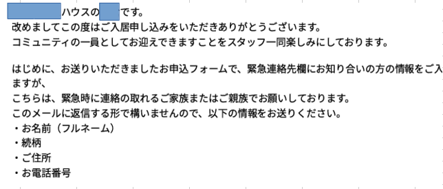
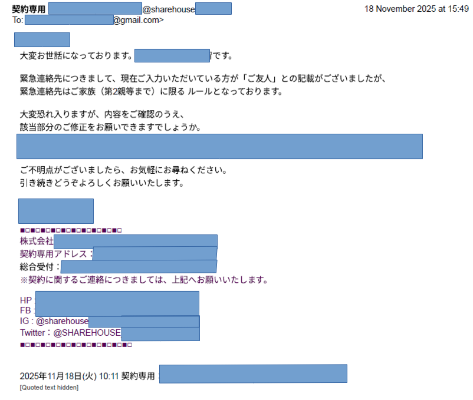

Conclusion
| Point | Summary |
|---|---|
| Typical rent style | One month rent fee is very typical in Japan, unlike 2 weeks rent fee is common in some other countries. |
| Initial costs | It can be over 300,000 JPY or even higher depending on how much the one month rent fee is. |
| Lower-cost option | Share houses(シェアハウス) or guest houses(ゲストハウス) have very lower initial costs, like 30,000-50,000 JPY |
| Guarantor | Most apartments require a guarantor or a guarantor company. |
| Emergency contact | Landlords often require an emergency contact, and they might prefer a family member. |
| What to check early | As apartments can be taken quickly, it could be better to check multiple options and verify the emergency-contact requirement in some cases. |
1. Overview
Renting an apartment in Japan has some unique steps and cultural expectations that may feel unfamiliar.
One month rent fee is very typical in Japan, unlike 2 weeks rent fee is common in some other countries.
2. Required Documents and Initial Costs(初期費用, shoki hiyou)
When renting an apartment, tenants are usually required to prepare several documents and pay multiple upfront fees.
| English | Japanese | Notes |
|---|---|---|
| Identification | 身分証明書, mibun shoumeisho | Passport, residence card, etc. |
| Proof of income or employment | 収入証明書, shūnyū shōmeisho | Pay slips, driver's license, employment contract, etc. |
| Emergency contact info | 緊急連絡先, kinkyū renraku-saki | Usually a family member |
| Guarantor / Guarantor company | 保証人 / 保証会社, hoshounin / hoshou gaisha | Most apartments require one or the other |
Initial costs can be quite high, often exceeding 300,000 JPY or more depending on the rent amount. So, you can choose a share house or guest house to live. Please refer to the table below.
| Regular Apartment | Share House / Guest House | |
|---|---|---|
| Initial Costs | can exceed 300,000 JPY(2,000 USD or 1,800 EUR) | Around 30,000-50,000 JPY (200-350 USD or 180-320 EUR) |
| Appliances | Must purchase yourself | Fridge, washing machine, etc. usually provided |
| Privacy | Full private unit | Shared common areas (kitchen, bath, etc.) |
3. Guarantor System
There are two main types of guarantors in Japan:
- 保証人, hoshounin, guarantor
- 保証会社, hoshou gaisha, guarantor company
Most apartments require a guarantor or a guarantor company.
This system exists because landlords want financial security in case the tenant cannot pay rent.
From my experience, a guarantor company is used, which charges a fee (usually around 50% of the monthly rent) to act as the guarantor for the tenant in most cases.
4. Emergency Contact (緊急連絡先, kinkyū renraku-saki)
Some landlords require an emergency contact and prefer a family member within the second degree of kinship. The requirement often appears as:
「緊急連絡先は原則2親等以内の親族でなければなりません」
("In principle, the emergency contact must be a relative within the second degree of kinship.")
「緊急時に連絡の取れるご家族またはご親族でお願いしております。 このメールに返信する形で構いませんので、以下の情報をお送りください。」
("We ask for a family member or relative who can be contacted in case of emergency. Please reply to this email with the following information.")

The key word is 原則 (gensoku) — "in principle." Many landlords allow exceptions if you explain your situation, but some are strict and accept only family. Always confirm before signing the lease.
The example below is a real response I received from a share house in 2025, rejecting a friend as an emergency contact:
緊急連絡先につきまして、現在ご入力いただいている方が「ご友人」との記載がございましたが、 緊急連絡先はご家族（第2親等まで）に限る ルールとなっております。
(We see that you have entered a "friend" as the emergency contact, but our rules require a family member up to the second degree of kinship. Please update the information accordingly.)

In practice, you can often write a friend or employer without needing their signature, but some landlords will not accept it — so check early, as apartments can be taken quickly.
Some landlords are also less welcoming to foreign tenants due to concerns about language barriers or cultural differences.
This is not universal, but worth being aware of.
4. Apartment Rules(アパートのルール, apāto no rūru)
Japanese apartments often have strict rules regarding noise, shared spaces, and daily routines.
These rules are designed to maintain harmony among residents.
5. Move-in Orientation(入居時のオリエンテーション, nyūkyoji no oriëntēshon)
When tenants move in, landlords or management companies may provide an orientation to explain the apartment's rules and procedures.
Some landlords or agencies provide explanations about:
- How to use appliances
- How to separate garbage
- How to contact management in emergencies